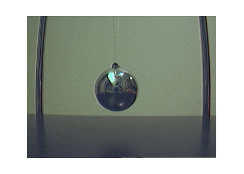
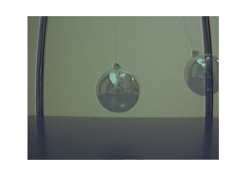
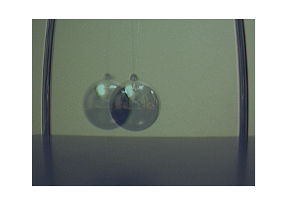

Alpha Blending Streamed Image Pairs
This demo captures streaming images from an image acquisition device, performs on-line image processing on each frame and displays the processed frames.
The result is an alpha blend of two images, one a stationary pendulum, the other a pendulum in motion, making moving features appear transparent.
Overview
Step 1: Capture A Background Image
Log and display a snapshot of the background with no moving features.
% Access an image acquisition device. vidobj = videoinput('winvideo', 1, 'RGB24_320X240');
% Using the preview window, properly position the camera.
preview(vidobj)
pause(1)% Capture an image with no moving features.
background = getsnapshot(vidobj);
% Display the background image in a figure window.
imshow(background);

Using the acquired image data, perform on-line image processing, and display the processed images in a figure window.
For each streamed image frame, calculate the linear combination between that frame and the background image. The linear combination effectively alpha blends the two images so any moving features appear transparent.
% Set the object into motion.
pause(2);
% Configure the figure to produce flash-free rendering. set(gcf, 'DoubleBuffer', 'on'); % Configure the acquisition. vidobj.FramesPerTrigger = 20; % Start the acquisition. start(vidobj)
% While logging data, perform a linear combination between % the current and background images. current = getdata(vidobj, 1); transparent = imlincomb(0.5, current, 0.5, background); % Display the processed image. imshow(transparent);
% Repeat for all remaining images. while (vidobj.FramesAvailable > 0), % Perform a linear combination between the current and background images. current = getdata(vidobj, 1); transparent = imlincomb(0.5, current, 0.5, background); % Display the processed image. imshow(transparent); end
% Once the video input object is no longer needed, delete % it and clear it from the workspace. delete(vidobj) clear vidobj